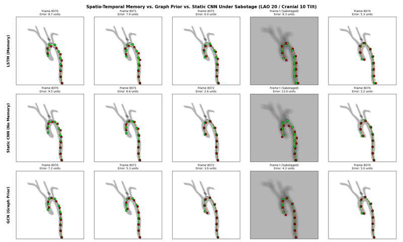

Vision Models for Guidewire Tracking in Fluoroscopy 2026 · MSc Thesis
The perception component of a world model for autonomous endovascular navigation. I systematically benchmarked ten architectures for markerless guidewire tracking on 10,000 simulated fluoroscopy frames, and found that self-supervised foundation-model features (DINOv3) dominate — a DINOv3+CNN adapter cut tracking error 1.8× over a raw-pixel CNN, while temporal memory significantly bounded worst-case error under acute image corruption.